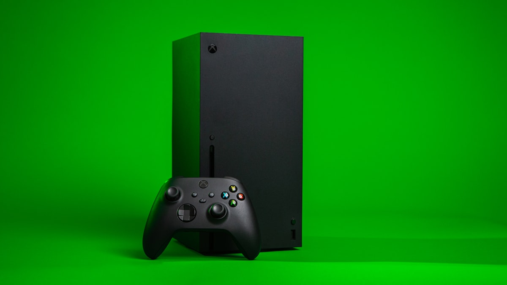

De ce este PS5 atât de greu de reparat?
O privire asupra arhitecturii PS5 și a motivelor pentru care intervențiile hardware cer experiență și echipamente dedicate.
Citește articolulNu înlocuim placa la primul semn de defect. O punem sub microscop, găsim componenta care a cedat și o reparăm. Laptopuri PC, MacBook, PlayStation și Xbox, în atelierul din Arad sau prin curier, din orice județ.
Ne ocupăm exclusiv de laptopuri și console. Fără telefoane, fără televizoare: doar echipamentele pe care le putem repara până la ultima componentă.
Dell, HP, Lenovo, ASUS, Acer, MSI și altele
 Apple
AppleIntel și Apple Silicon (M1 – M4)
 Sony
SonyPS4, PS4 Pro, PS5, PS5 Slim și Pro

MicrosoftOne, One S, One X, Series S, Series X
Multe service-uri se opresc la nivel de modul: dacă placa nu pornește, propun înlocuirea ei, la un preț care de multe ori depășește valoarea echipamentului. Noi lucrăm un nivel mai jos.
Cu scheme electrice, microscop și stație de lipit cu aer cald, identificăm exact componenta care a cedat (un circuit de alimentare, un mosfet, un controller de încărcare, un chip HDMI) și o înlocuim. Placa rămâne a ta, datele rămân pe loc, iar costul este, de regulă, o fracțiune din prețul unei plăci noi.
Același proces indiferent dacă aduci echipamentul personal în Arad sau îl trimiți prin curier.
Prin formular, telefon sau WhatsApp. Ne spui modelul și ce ai observat: nu pornește, s-a udat, nu are imagine.
Verificăm echipamentul și identificăm cauza reală, nu doar simptomul. Îți explicăm ce am găsit.
Primești prețul și timpul estimat înainte de orice lucrare. Intervenim numai după ce confirmi.
Reparăm, testăm sub sarcină, apoi predăm în Arad sau expediem prin curier, ambalat corespunzător.
Nu contează dacă ești în Timișoara, Cluj, București sau într-o localitate fără service în apropiere. Chemăm curierul la adresa ta, iar echipamentul se întoarce testat și ambalat corespunzător.
Recenzii publicate pe fișa Google a service-ului, R89 Electronics, Arad.
Am dus un laptop pe care l-am prăjit eu din prostie, încercând să înlocuiesc un ecran fără să deconectez bateria. S-a făcut corect constatarea, a fost înlocuit cipul iar acum laptopul e ca nou. Prețuri corecte. Recomand!
Am avut surpriza ca din laptopul meu sa „iasa fumul magic”. L-am dus la R89 Electronics, a doua zi era deja reparat, mentenanta facuta (suflat de praf, schimbat pasta la microprocesor). Tarif superacceptabil, seriozitate maxima. Recomand!
Am avut o problema cu laptopul, care fiind destul de vechi, nu mai pornea. Am trimis laptopul, am primit evaluarea prompt, si problema a fost remediata in scurt timp. Foarte multumit de servicii si de atitudinea corecta a baietilor de la R89.
O persoană pricepută care poate rezolva multe probleme pe care alții nu reușesc. Îl recomand cu plăcere!
Seriozitate, promptitudine! Recomand cu cea mai mare încredere!
Două firme mi-au spus că trebuie înlocuită placa de bază. În trei zile l-am primit înapoi funcțional. Recomand.
Doar după diagnostic. Verificăm echipamentul, identificăm componentele necesare și disponibilitatea lor, apoi îți comunicăm o ofertă fermă. Lucrarea începe numai după ce o accepți. Nu dăm prețuri „la telefon” pentru defecte de placă de bază, pentru că același simptom poate avea cauze foarte diferite.
Depinde de defect și de disponibilitatea componentelor. Multe intervenții de alimentare sau HDMI se finalizează în câteva zile lucrătoare. Pentru cazuri complexe (daune lichide extinse, reballing BGA) îți comunicăm termenul odată cu oferta.
Da, pentru lucrarea efectuată și pentru componentele înlocuite. Perioada depinde de tipul intervenției și este menționată pe fișa de service la predare.
La o reparație de placă de bază, nu: stocarea (SSD/HDD) nu este afectată. La MacBook-urile cu SSD lipit pe placă, reparăm placa logică tocmai pentru a păstra datele. Recomandăm oricum o copie de siguranță ori de câte ori este posibil.
Îți spunem clar și explicăm de ce. Echipamentul se întoarce la tine, iar condițiile de retur (transport, eventuala taxă de diagnostic) ți le comunicăm de la început, înainte să expediezi.
Folosim componente originale acolo unde sunt disponibile sau echivalente de calitate, testate. La nivel de placă, majoritatea componentelor (mosfet, controllere, condensatori, porturi HDMI) sunt piese standard de la producătorii de semiconductori, aceleași cu cele montate din fabrică.
PlayStationO privire asupra arhitecturii PS5 și a motivelor pentru care intervențiile hardware cer experiență și echipamente dedicate.
Citește articolulCe verificăm la un laptop care nu pornește, de ce nu schimbăm piese „la ghici” și când merită reparația.
Citește articolul Ghid
GhidUn diagnostic corect protejează echipamentul și reduce riscul unor intervenții inutile sau al unor piese schimbate degeaba.
Citește articolulCompletezi formularul în două minute, te contactăm pentru confirmare și, dacă nu ești din Arad, organizăm noi curierul.
R89 Repairs este un service din Arad specializat în reparații la nivel de placă de bază pentru laptopuri, MacBook, PlayStation și Xbox. Peste 17 ani de defecte reale, rezolvate cu schemă, microscop și răbdare.
R89 Repairs a pornit de la bancul de lucru al unui tehnician care repara electronice cu mult înainte ca „la nivel de placă de bază” să devină un argument de marketing. Surse în comutație, plăci industriale, apoi laptopuri și console: în peste 17 ani, modul de lucru a rămas același. Măsori, înțelegi, apoi intervii.
Astăzi lucrăm din atelierul de pe Strada Stupilor nr. 6, în Arad, pentru clienți din oraș și pentru echipamente sosite prin curier din toată țara. Ne ocupăm exclusiv de laptopuri (PC și MacBook) și de console PlayStation și Xbox. Nu reparăm telefoane, televizoare sau electrocasnice: preferăm să fim foarte buni pe puține categorii decât să facem de toate.
Cea mai mare parte a echipamentelor care ajung la noi au trecut deja printr-un alt service, unde răspunsul a fost „trebuie schimbată placa”. De cele mai multe ori nu trebuie.
Nu schimbăm piese la ghici. Identificăm cauza defectului cu instrumente de măsură, apoi îți explicăm ce am găsit și de ce a apărut.
Primești prețul și termenul înainte de intervenție. Dacă pe parcurs apare ceva neprevăzut, te sunăm înainte, nu după.
Un laptop reparat rulează sub sarcină, o consolă reparată rulează un joc, nu doar meniul. Abia apoi pleacă din atelier, cu garanție.
Fără ele, „reparație de placă de bază” înseamnă doar reflow cu aer cald și speranță. Cu ele, înseamnă măsurători, localizare precisă și înlocuire controlată.
Specializarea pe laptopuri și console a venit natural: sunt echipamentele pentru care „schimbă placa” costă cel mai mult și pentru care reparația la nivel de componentă face cea mai mare diferență.
Strada Stupilor nr. 6, Arad. Luni – Sâmbătă, 09:00 – 20:00. Sau prin curier, din orice județ.
Alege echipamentul și vezi problemele pe care le rezolvăm frecvent. Dacă defectul tău nu apare în listă, descrie-ni-l: lista e orientativă, diagnosticul e cel care contează.
Dell, HP, Lenovo, ASUS, Acer, MSI, gaming și business. Circuite de alimentare, daune lichide, fără imagine, display.
Placă logică Intel și Apple Silicon. Alimentare, controllere USB-C, corodare după lichide, backlight, tastatură și trackpad.
PS4, PS4 Pro, PS5, PS5 Slim și Pro. Porturi HDMI, chip HDMI, surse, erori în joc, supraîncălzire, unitate optică.
Xbox One, One S, One X, Series S și Series X. Surse interne, HDMI, erori de sistem, supraîncălzire, module wireless.
În majoritatea cazurilor, defectul este o componentă: un mosfet străpuns pe circuitul de alimentare, un controller de încărcare, un condensator în scurt, o mufă cu lipiturile fisurate. Le identificăm cu schema electrică, camera termică și osciloscopul, apoi le înlocuim la microscop.
Lucrăm pe laptopuri de birou, ultrabook-uri și laptopuri de gaming cu placă video dedicată. Aducem placa în stare de funcționare și o testăm sub sarcină înainte de predare, ca să știi că nu doar „pornește”, ci și rezistă.
Fără LED, fără ventilator, nicio reacție la buton. De obicei circuitul de alimentare: mosfet, controller PWM, siguranță sau un scurt pe una din liniile principale.
Cafea, apă, suc. Corodarea începe în câteva ore și avansează în câteva zile. Cu cât ajunge mai repede la noi, cu atât șansele sunt mai bune. Nu îl porni ca să „vezi dacă merge”.
Pornește, ventilatorul merge, LED-urile sunt aprinse, dar ecranul rămâne negru și pe monitor extern. Cauze: chipset, GPU, memorie, linie de alimentare a display-ului sau cablul eDP.
Sticlă crăpată, pete negre, linii verticale, pâlpâit sau imagine foarte întunecată. Uneori e panoul, alteori cablul sau circuitul de backlight de pe placă.
Ventilator zgomotos, carcasă fierbinte, opriri bruște în joc sau la randare. Pastă termică uscată, praf, dar și circuite de alimentare GPU care lucrează la limită.
Bateria nu se încarcă, LED-ul clipește, trebuie să ții cablul într-o anumită poziție. Mufa DC sau USB-C cu lipituri fisurate, ori circuitul de încărcare defect.
Rezolvăm și: tastatură sau touchpad neresponsiv, porturi USB defecte, laptop care nu vede bateria, ecran albastru repetat cauzat de hardware, upgrade SSD și memorie.
Descrie-ne ce ai observat. Îți spunem care e următorul pas: îl aduci în Arad sau ți-l preluăm prin curier.
Adesea, da. O reparație de placă costă de obicei mult mai puțin decât un laptop nou echivalent, iar datele și configurația rămân neatinse. Îți spunem sincer, după diagnostic, dacă reparația se justifică.
Oprește-l imediat, scoate încărcătorul, nu-l mai porni și nu-l pune la uscat pe calorifer. Cu cât ajunge mai repede la curățare, cu atât corodarea face mai puțină pagubă.
Da, la laptopuri avem nevoie de încărcătorul original pentru diagnostic și testare. Nu trimite geanta, mouse-ul sau alte accesorii.
De la modelele Retina încoace, SSD-ul este lipit pe placa logică. Dacă placa e înlocuită, datele dispar odată cu ea. De aceea, la MacBook reparăm placa logică la nivel de componentă ori de câte ori este posibil: circuite de alimentare, controllere USB-C (CD3215 / CD3217), SMC, linii corodate după contactul cu lichide.
Lucrăm cu scheme și boardview pentru MacBook Air și MacBook Pro, pe generații Intel și Apple Silicon. Suntem un service independent, neafiliat Apple.
Nicio reacție la încărcător, fără sunet de pornire, sau încarcă doar pe un port. Frecvent: circuitele de alimentare, controllerele USB-C, SMC sau un scurt pe placa logică.
La MacBook, lichidul ajunge rapid la placa logică și la tastatură. Corodarea pe liniile de alimentare oprește pornirea în câteva zile, chiar dacă la început „merge”.
Pornește (se aude, tastatura se luminează, apare pe monitor extern), dar ecranul e negru sau foarte întunecat. Circuit de backlight, siguranță arsă, cablu display uzat.
Sticlă crăpată, pete, dungi colorate, imagine „scursă”. La MacBook display-ul se înlocuiește ca ansamblu, dar verificăm întâi că placa și cablul nu sunt afectate.
Taste care nu răspund, trackpad care nu face click, Touch Bar stinsă, Touch ID care nu mai funcționează. Cabluri flex, conectori sau controllere pe placă.
Placa nu mai pornește, dar ai nevoie de datele de pe SSD-ul lipit. Repunem placa logică în funcțiune suficient cât să salvăm datele, chiar dacă reparația completă nu se justifică.
Rezolvăm și: baterie umflată sau descărcare rapidă, ventilator la maxim în repaus, MacBook care se oprește la un anumit procent, porturi USB-C care nu mai văd perifericele.
Spune-ne modelul (îl găsești pe spatele carcasei, sub „MacBook Pro/Air”) și ce ai observat. Revenim cu următorul pas.
Service-urile autorizate lucrează la nivel de modul: înlocuiesc placa întreagă. Noi reparăm placa existentă la nivel de componentă. În multe cazuri defectul este un singur circuit, iar reparația costă considerabil mai puțin și păstrează datele.
Nu, dacă reparăm placa logică existentă. Datele rămân pe SSD-ul lipit. Recomandăm totuși o copie de siguranță (Time Machine) imediat ce MacBook-ul revine la tine.
Da. Lucrăm pe M1, M2, M3 și M4, atât Air cât și Pro. Diagnosticul urmează aceeași logică: linii de alimentare, controllere, corodare, display.
Portul HDMI smuls din placă, chipul HDMI (retimer) străpuns de un cablu cu probleme, un mosfet pe circuitul de alimentare, lichidul metalic de la PS5 care a migrat: sunt defecte precise, cu soluții precise. Le identificăm cu schema în față și le reparăm la microscop.
Lucrăm pe toate generațiile PS4 și PS5. Consola pleacă din atelier după ce a rulat un joc, nu doar meniul.
Consola nu reacționează, sau pornește o secundă și se oprește cu trei bipuri. Sursă internă, circuit de alimentare de pe placă sau un scurt pe una din linii.
LED-ul e alb, ventilatorul merge, dar televizorul spune „No signal”. De obicei portul HDMI, chipul HDMI sau o linie de alimentare a acestuia.
Pini îndoiți, cablu scos cu forță, mufa „joacă” sau imaginea apare doar dacă ții cablul apăsat. Cea mai frecventă defecțiune la PS5 și PS4.
Îngheață, repornește singură, erori CE-xxxxx, jocurile se închid. Poate fi memoria, SSD-ul, alimentarea GPU / CPU sau, la PS4, lipiturile BGA.
Se oprește după câteva minute de joc, sună ca un avion. Praf, pastă termică uscată sau, la PS5, lichid metalic degradat ori migrat pe placă.
Scoate discul, face zgomot, nu recunoaște Blu-ray-urile sau nu trage discul înăuntru. Laser uzat, mecanism blocat sau placa unității optice.
Rezolvăm și: controller DualSense cu stick drift sau port de încărcare defect, PS5 care nu se conectează la Wi-Fi, consolă blocată în safe mode, port USB defect.
Spune-ne modelul și ce ai observat. Consola vine fără cabluri, controllere sau discuri, doar unitatea.
Pentru că, de multe ori, cablul defect a stricat și chipul HDMI de pe placă, nu doar mufa. Verificăm chipul și liniile lui de alimentare înainte de a înlocui portul, ca să nu plătești două intervenții.
Dacă este încă în garanția producătorului, îți recomandăm să folosești garanția. Dacă a expirat sau garanția a fost refuzată (de exemplu, pentru contact cu lichide), o reparăm noi.
La reparațiile de placă, nu. Stocarea nu este afectată. Dacă defectul este chiar SSD-ul, îți spunem înainte de intervenție.
Xbox One S, One X și Series X au sursa de alimentare în interior, iar ea este primul suspect când consola se stinge singură. Urmează portul HDMI și chipul retimer, apoi erorile de sistem care blochează pornirea. Pentru fiecare avem o procedură clară de diagnostic, iar reparația se face pe placă, nu prin înlocuirea ei.
Lucrăm pe toate modelele Xbox One și Xbox Series. Consola pleacă din atelier după testare într-un joc, cu temperaturi verificate.
Butonul răspunde, apoi consola se oprește sau repornește în buclă. La One S / One X / Series X sursa internă este primul suspect, urmată de circuitul de alimentare de pe placă.
Televizorul nu găsește semnal, mufa HDMI e slăbită sau a fost smulsă. Uneori portul, alteori chipul retimer de lângă el, deteriorat de un cablu cu probleme.
Consola rămâne pe ecranul de eroare (E100, E101, E102, E105, E200, E203) sau într-o buclă de actualizare. Poate fi stocarea, memoria sau doar sistemul.
Ventilator zgomotos, carcasă fierbinte, mesaj de supraîncălzire. Praf, pastă termică uscată, radiator montat greșit după o intervenție anterioară.
Discul este respins, „disc necunoscut”, zgomot mecanic sau discul nu este tras înăuntru. Laser, mecanism sau placa unității optice, care pe Xbox este împerecheată cu consola.
Controllerul se deconectează sau nu se mai împerechează, rețeaua Wi-Fi dispare. Modulul wireless sau antenele de pe placă.
Rezolvăm și: controller Xbox cu stick drift sau butoane care nu răspund, port USB defect, consolă care nu iese din modul de repaus, sunet lipsă pe HDMI.
Spune-ne modelul și ce ai observat. Trimite doar consola, fără cabluri, controllere sau discuri.
De cele mai multe ori, da, la modelele cu sursă internă. Dar același simptom apare și la un scurt pe placă. Verificăm sursa separat, apoi placa, ca să reparăm cauza reală.
Nu direct: placa unității optice este împerecheată cu placa de bază. Reparăm mecanismul sau laserul păstrând placa originală a drive-ului, ca să nu pierzi funcția de citire.
Da: stick drift, butoane, port de încărcare, vibrație. Le trimiți împreună cu consola sau separat.
Peste jumătate din echipamentele care ajung în atelier vin prin curier. Am simplificat procesul cât s-a putut: tu ambalezi, noi ne ocupăm de rest.
Completezi formularul cu echipamentul, modelul și simptomele. Sau ne scrii pe WhatsApp.
Te sunăm, stabilim detaliile și comandăm noi ridicarea coletului de la adresa ta, de oriunde din România.
Protejezi echipamentul conform ghidului de mai jos și îl predai curierului sau îl depui într-un locker, după instrucțiuni.
La sosire fotografiem coletul și starea echipamentului. După diagnostic primești explicația defectului și oferta. Reparăm numai după acordul tău.
După intervenție testăm echipamentul sub sarcină, îl fotografiem, îl ambalăm și îl expediem înapoi la tine.
Lasă cel puțin 5 cm de material de protecție pe fiecare latură: folie cu bule, spumă sau hârtie mototolită. Echipamentul nu trebuie să se miște în cutie.
Avem nevoie de el pentru diagnostic și testare. Scoate laptopul din geantă, împachetează-l separat și nu pune obiecte grele peste el.
Fără cabluri, controllere, discuri sau suport vertical. Scoate discul din unitate înainte de a ambala. Un disc uitat înăuntru se poate zgâria la transport.
Numele, telefonul și, pe scurt, defectul. Ne ajută să asociem imediat coletul cu solicitarea ta.
Câteva poze cu echipamentul și cu coletul închis. Noi fotografiem la sosire, tu la plecare: starea este documentată la ambele capete.
Pentru echipamente scumpe, cere asigurarea coletului. Costul este mic în raport cu valoarea unui MacBook sau a unei console noi.
Costul transportului dus-întors ți-l comunicăm la confirmarea solicitării, înainte de a chema curierul. Fără costuri ascunse la retur.
După diagnostic îți explicăm defectul și îți trimitem oferta cu preț și termen. Intervenția începe numai după ce o accepți.
Echipamentul se întoarce la tine, în starea în care a sosit. Condițiile de retur le afli de la început, înainte să expediezi.
Indiferent de localitate, curierul ajunge la tine. Cele mai multe echipamente ne vin din Timiș, Cluj, București, Bihor și Hunedoara, dar lista e completă.
Cu firme de curierat naționale care ridică de la adresă și livrează în toată țara. Îți spunem la confirmare cine vine și în ce interval.
De regulă, o zi lucrătoare în fiecare sens, în funcție de localitate. Timpul de reparație se adaugă separat și ți-l comunicăm odată cu oferta.
După acceptarea ofertei, prin transfer bancar sau ramburs la curier, la retur. Primești factură pentru lucrare.
Da. Te ținem la curent telefonic sau pe WhatsApp la fiecare pas important: sosire, diagnostic, ofertă, finalizare, expediere.
Completezi formularul, te sunăm pentru confirmare și comandăm curierul. Restul e treaba noastră.
Subcontractezi reparațiile de placă de bază, BGA și daune lichide. Clientul rămâne al tău, echipamentul se întoarce la tine.
Reparații și întreținere pentru laptopurile angajaților, cu preluare de la sediu și raport per echipament.
Reparații post-garanție pentru clienții tăi, laptopuri și console, cu circuit clar de predare și retur.
Console și laptopuri folosite intensiv. Intervenții rapide, ca echipamentele să nu stea pe tușă.
Ne spui ce echipamente ai, ce volum estimezi și ce te blochează acum.
Trimiți câteva lucrări reale. Vezi cum lucrăm, cum raportăm, cât durează.
Tarife, termene, mod de transport și facturare. Simplu, într-o pagină.
Ne găsești în Arad, pe Strada Stupilor nr. 6, de luni până sâmbătă. Pentru întrebări rapide, WhatsApp-ul este cea mai scurtă cale.
Service reparații laptopuri și console
Două minute de completat. Te contactăm pentru confirmare și, dacă nu ești din Arad, organizăm noi curierul. Nu trimite echipamentul înainte să vorbim.
Condițiile în care R89 Repairs preia, diagnostichează și repară echipamentele clienților.
Prezentul site și serviciile descrise în el sunt operate de R89 Repairs, cu punct de lucru în Arad, Strada Stupilor nr. 6. Prin trimiterea unei solicitări de reparație sau prin predarea unui echipament, clientul acceptă condițiile de mai jos.
Echipamentele pot fi predate personal la punctul de lucru sau expediate prin curier, după confirmarea telefonică a solicitării. La primire, echipamentul este fotografiat și înregistrat cu datele de identificare (model, serie, stare vizibilă, accesorii).
Orice intervenție este precedată de diagnostic. Clientul primește o ofertă cu prețul și termenul estimat, iar reparația începe numai după acceptarea ofertei. Dacă în timpul intervenției apar defecte suplimentare, clientul este informat înainte de continuarea lucrării.
Prețurile comunicate în ofertă includ manopera și componentele înlocuite. Plata se face la predarea echipamentului, prin numerar, card, transfer bancar sau ramburs la curier. Pentru fiecare lucrare se emite factură.
Lucrările efectuate beneficiază de garanție pentru intervenția realizată și pentru componentele înlocuite, pe perioada menționată pe fișa de service. Garanția nu acoperă defecte diferite de cel reparat, deteriorări mecanice, contact ulterior cu lichide sau intervenții efectuate de terți.
Echipamentele care au intrat în contact cu lichide pot prezenta defecte latente care apar după reparație. Clientul este informat despre acest risc înainte de intervenție, iar condițiile de garanție pentru aceste cazuri sunt stabilite în ofertă.
Echipamentele finalizate sau nereparate care nu sunt ridicate sau pentru care nu se acceptă returul prin curier în termen de 90 de zile de la notificare pot fi valorificate pentru acoperirea costurilor, conform legislației în vigoare.
Recomandăm clienților să realizeze o copie de siguranță a datelor înainte de predare. R89 Repairs nu accesează datele personale de pe echipamente dincolo de ce este necesar pentru testare și nu răspunde pentru pierderea datelor în cazul defectelor de stocare preexistente.
Pentru orice întrebare legată de acești termeni ne poți scrie la contact@r89-repairs.ro sau suna la +40 775 515 613.
Ce date colectăm prin acest site, de ce și cât timp le păstrăm.
Prin formularele de pe site colectăm numele, numărul de telefon, adresa de email, adresa poștală (pentru expedieri prin curier) și informațiile pe care le oferi despre echipament și defect.
Datele sunt folosite exclusiv pentru a răspunde solicitării tale: confirmarea cererii, organizarea transportului, comunicarea diagnosticului și a ofertei, emiterea documentelor fiscale și acordarea garanției.
Prelucrarea se face în baza executării contractului de prestări servicii solicitat de tine și, pentru comunicările de confirmare, în baza consimțământului exprimat la trimiterea formularului.
Adresa și telefonul sunt transmise firmei de curierat pentru ridicarea și livrarea coletului. Datele de facturare sunt transmise furnizorului de servicii contabile. Nu vindem și nu cedăm datele către terți în scopuri de marketing.
Datele legate de o reparație sunt păstrate pe durata garanției și pe perioada cerută de legislația fiscală pentru documentele emise. Solicitările fără o reparație efectivă sunt șterse în cel mult 12 luni.
Ai dreptul de acces, rectificare, ștergere, restricționare și portabilitate a datelor, precum și dreptul de a depune o plângere la ANSPDCP. Pentru exercitarea acestor drepturi, scrie-ne la contact@r89-repairs.ro.
Site-ul folosește cookie-uri strict necesare funcționării și, opțional, cookie-uri de statistică anonimizată. Harta Google încorporată în pagina de contact poate seta cookie-uri proprii, conform politicii Google.